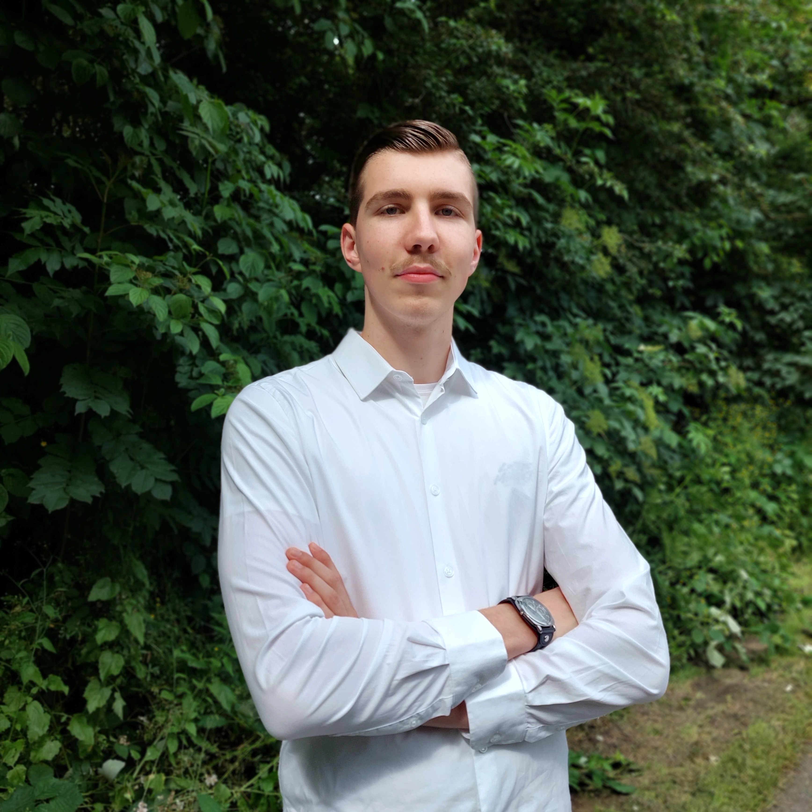

ABOUT


I am Mathijs van der Meijde, a Second Year Student and Peercoach studying Creative Media & Game Technologies at Rotterdam University of Applied Sciences. I work on many different projects, including Websites, Apps, Games, and IoT-Devices. I also like to try out different projects in my free time, like making Mods and developing in UE5. During my projects in the past year, I have gained experience with HTML, CSS, JavaScript, and PHP. I enjoy trying out new Software and Hardware and experimenting with new Programming Languages.
I also focus on improving my personal skills. I am a very detail-oriented and organized person who values planning and structure. I enjoy working together with others in a team, because varied skills can complement eachother. Additionally, I prefer taking on a leadership role in projects because I like to guide my team to success using effective communication and by leveraging each team member's strengths.
In my free time, I enjoy exercising at the gym, playing all kinds of video games, and working on various creative projects. During these projects, I like to learn new skills and experiment with different technologies. During these projects, I like to try out things I haven't used before and learn some new valuable skills.
Using this portfolio, I will take you with me on my journey through the world of technology and creativity. I will show you the projects I have worked on, the skills I have learned, and the experiences I have gained. Feel free to reach out to me if you have any questions or suggestions!